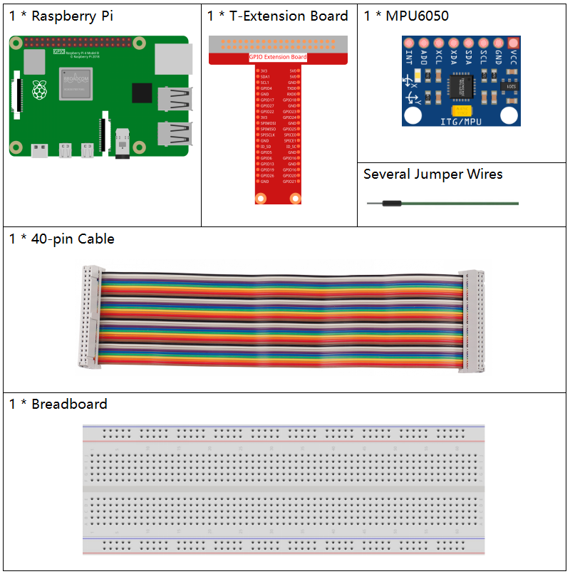
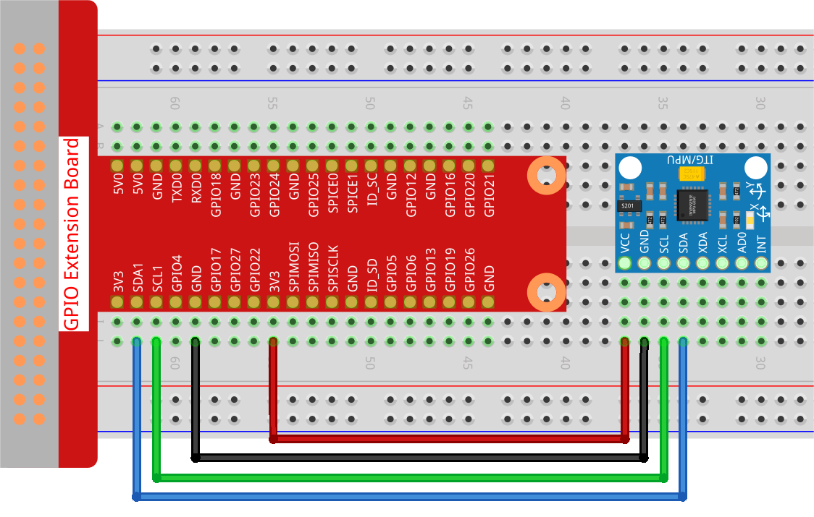

Nota
¡Hola! Bienvenido a la comunidad de entusiastas de SunFounder para Raspberry Pi, Arduino y ESP32 en Facebook. Únete a otros apasionados y profundiza en el uso de Raspberry Pi, Arduino y ESP32.
¿Por qué unirte?
Soporte de expertos: Resuelve problemas postventa y desafíos técnicos con la ayuda de nuestra comunidad y equipo.
Aprende y comparte: Intercambia consejos y tutoriales para mejorar tus habilidades.
Avances exclusivos: Obtén acceso anticipado a anuncios de nuevos productos y adelantos exclusivos.
Descuentos especiales: Disfruta de descuentos exclusivos en nuestros productos más recientes.
Promociones festivas y sorteos: Participa en sorteos y promociones de temporada.
👉 ¿Listo para explorar y crear con nosotros? Haz clic en [Aquí] y únete hoy mismo.
2.2.6 Módulo MPU6050
Introducción
El MPU-6050 es el primer y único dispositivo de seguimiento de movimiento de 6 ejes del mundo (giroscopio de 3 ejes y acelerómetro de 3 ejes), diseñado para smartphones, tabletas y sensores portátiles. Este dispositivo combina bajo consumo, bajo costo y alto rendimiento.
En este experimento, utilizaremos la interfaz I2C para obtener los valores del sensor de aceleración y del giroscopio de tres ejes del MPU6050 y los mostraremos en pantalla.
Componentes necesarios
En este proyecto, necesitamos los siguientes componentes.
Diagrama esquemático
El MPU6050 se comunica con el microcontrolador a través de la interfaz de bus I2C. Los pines SDA1 y SCL1 deben conectarse a los pines correspondientes.

Procedimientos experimentales
Paso 1: Construye el circuito.
Paso 2: Configura el I2C (consulta el Apéndice Configuración de I2C. Si ya has configurado el I2C, omite este paso.)
Paso 3: Ve a la carpeta del código.
cd ~/davinci-kit-for-raspberry-pi/python-pi5
Paso 4: Ejecuta el archivo ejecutable.
sudo python3 2.2.6_mpu6050.py
Con el código en ejecución, se calculará y se mostrará en pantalla el ángulo de deflexión de los ejes x e y, así como la aceleración y la velocidad angular en cada eje leídos por el MPU6050.
Nota
Si obtienes el error
FileNotFoundError: [Errno 2] No such file or directory: '/dev/i2c-1', consulta Configuración de I2C para habilitar el I2C.Si aparece el error
ModuleNotFoundError: No module named 'smbus2', ejecutasudo pip3 install smbus2.Si ves el error
OSError: [Errno 121] Remote I/O error, significa que el módulo está mal conectado o está dañado.
Advertencia
Si aparece el mensaje de error RuntimeError: Cannot determine SOC peripheral base address, consulta Si gpiozero no funciona.
Código
Nota
Puedes Modificar/Restablecer/Copiar/Ejecutar/Detener el código a continuación. Pero antes, debes ir a la ruta del código fuente como davinci-kit-for-raspberry-pi/python-pi5. Después de modificar el código, puedes ejecutarlo directamente para ver el efecto.
import smbus
import math
import time
# Registros de gestión de energía
power_mgmt_1 = 0x6b
power_mgmt_2 = 0x6c
def read_byte(adr):
return bus.read_byte_data(address, adr)
def read_word(adr):
high = bus.read_byte_data(address, adr)
low = bus.read_byte_data(address, adr+1)
val = (high << 8) + low
return val
def read_word_2c(adr):
val = read_word(adr)
if (val >= 0x8000):
return -((65535 - val) + 1)
else:
return val
def dist(a,b):
return math.sqrt((a*a)+(b*b))
def get_y_rotation(x,y,z):
radians = math.atan2(x, dist(y,z))
return -math.degrees(radians)
def get_x_rotation(x,y,z):
radians = math.atan2(y, dist(x,z))
return math.degrees(radians)
bus = smbus.SMBus(1) # o bus = smbus.SMBus(1) para placas de la revisión 2
address = 0x68 # Este es el valor de dirección leído con el comando i2cdetect
# Ahora despertamos el 6050, ya que inicia en modo de suspensión
bus.write_byte_data(address, power_mgmt_1, 0)
while True:
time.sleep(0.1)
gyro_xout = read_word_2c(0x43)
gyro_yout = read_word_2c(0x45)
gyro_zout = read_word_2c(0x47)
print ("gyro_xout : ", gyro_xout, " scaled: ", (gyro_xout / 131))
print ("gyro_yout : ", gyro_yout, " scaled: ", (gyro_yout / 131))
print ("gyro_zout : ", gyro_zout, " scaled: ", (gyro_zout / 131))
accel_xout = read_word_2c(0x3b)
accel_yout = read_word_2c(0x3d)
accel_zout = read_word_2c(0x3f)
accel_xout_scaled = accel_xout / 16384.0
accel_yout_scaled = accel_yout / 16384.0
accel_zout_scaled = accel_zout / 16384.0
print ("accel_xout: ", accel_xout, " scaled: ", accel_xout_scaled)
print ("accel_yout: ", accel_yout, " scaled: ", accel_yout_scaled)
print ("accel_zout: ", accel_zout, " scaled: ", accel_zout_scaled)
print ("x rotation: " , get_x_rotation(accel_xout_scaled, accel_yout_scaled, accel_zout_scaled))
print ("y rotation: " , get_y_rotation(accel_xout_scaled, accel_yout_scaled, accel_zout_scaled))
time.sleep(1)
Explicación del código
Lee los datos del sensor enviados desde el MPU6050.
def read_word(adr): high = bus.read_byte_data(address, adr) low = bus.read_byte_data(address, adr+1) val = (high << 8) + low return val def read_word_2c(adr): val = read_word(adr) if (val >= 0x8000): return -((65535 - val) + 1) else: return val
Calcula el ángulo de deflexión del eje y.
def get_y_rotation(x,y,z): radians = math.atan2(x, dist(y,z)) return -math.degrees(radians)
Calcula el ángulo de deflexión del eje x.
def get_x_rotation(x,y,z): radians = math.atan2(y, dist(x,z)) return math.degrees(radians)
Lee los valores de los ejes x, y y z en el sensor de giroscopio, convierte los datos a valores de velocidad angular y luego los imprime.
gyro_xout = read_word_2c(0x43) gyro_yout = read_word_2c(0x45) gyro_zout = read_word_2c(0x47) print ("gyro_xout : ", gyro_xout, " scaled: ", (gyro_xout / 131)) print ("gyro_yout : ", gyro_yout, " scaled: ", (gyro_yout / 131)) print ("gyro_zout : ", gyro_zout, " scaled: ", (gyro_zout / 131))
Lee los valores de los ejes x, y y z en el sensor de aceleración, convierte los datos a valores de velocidad de aceleración (en unidades de gravedad) y los imprime.
accel_xout = read_word_2c(0x3b) accel_yout = read_word_2c(0x3d) accel_zout = read_word_2c(0x3f) accel_xout_scaled = accel_xout / 16384.0 accel_yout_scaled = accel_yout / 16384.0 accel_zout_scaled = accel_zout / 16384.0 print ("accel_xout: ", accel_xout, " scaled: ", accel_xout_scaled) print ("accel_yout: ", accel_yout, " scaled: ", accel_yout_scaled) print ("accel_zout: ", accel_zout, " scaled: ", accel_zout_scaled)
Imprime los ángulos de deflexión de los ejes x e y.
print ("x rotation: " , get_x_rotation(accel_xout_scaled, accel_yout_scaled, accel_zout_scaled)) print ("y rotation: " , get_y_rotation(accel_xout_scaled, accel_yout_scaled, accel_zout_scaled))